The unique and developing history
of the Nivaclé communities
descending from Mistolar
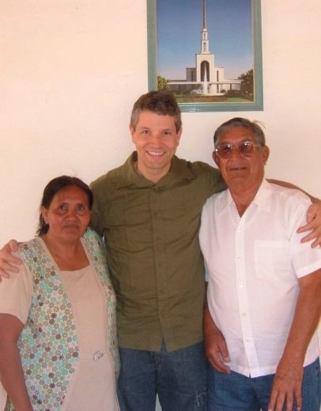
Ricky Loynd in the home of Walter Flores and his wife Rosaria below a photo of the Sao Paolo Temple where they were sealed in 1989.
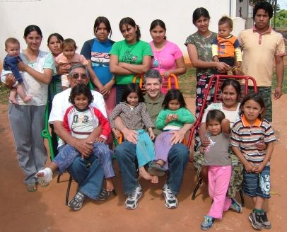
Brother and Sister Flores have 8 children and 15 grandchildren. Here are some of their family who live nearby.
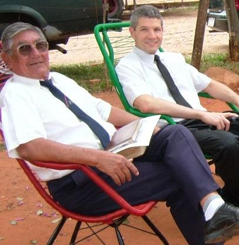
Sunday, August 24th, the 28th anniversary of the Flores family’s baptism.
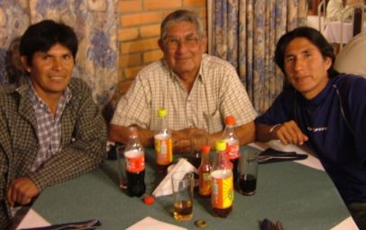
Walter with two of his sons, Mariano and Eugenio, at the Hotel Florida in Filadelfia, where Mariano lives. Eugenio lives in Cerrito, near Benjamin Aceval.
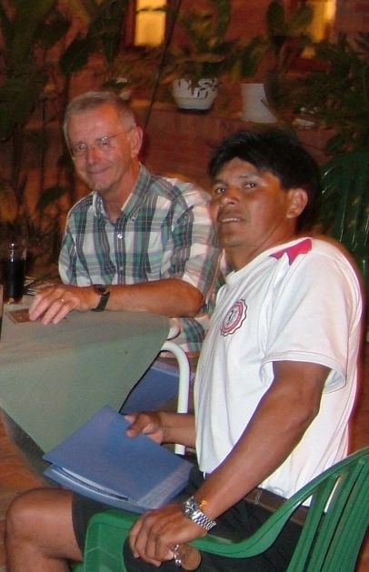
Mariano Flores with Ed Soper of the Nivaclé Foundation.
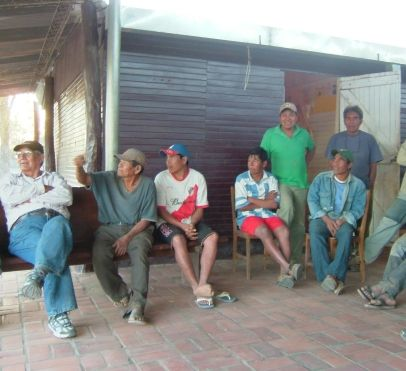
Outside the third Mistolar Chapel, which is also the grade school. Two pillars of the community are standing in back, Julio Yegros and Gonzalo Osorio. Julio served as one of the first full-time Nivacle missionaries, as the fifth branch president, and as school teacher until now. Gonzalo served as the second branch president, as school teacher, and as elected Leader of Mistolar since 1997.
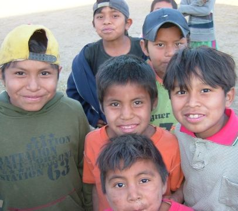
It’s a camera.
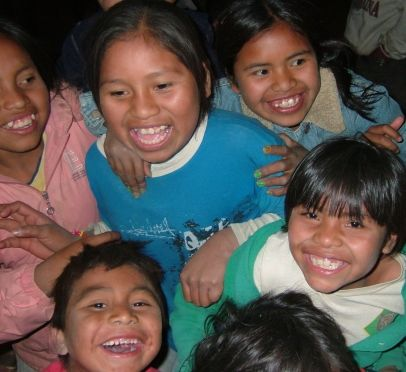
Cameras are fun.
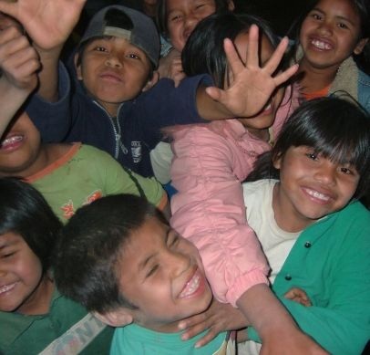
The crowd goes wild.
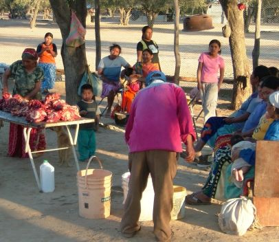
Cooking for a celebration. Mistolar’s ample land currently supports over 120 cattle and 600 goats. After 28 years the people still don’t have clear title to their land, but may receive it soon.
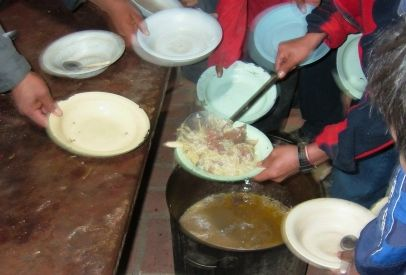
Get it while it's hot.
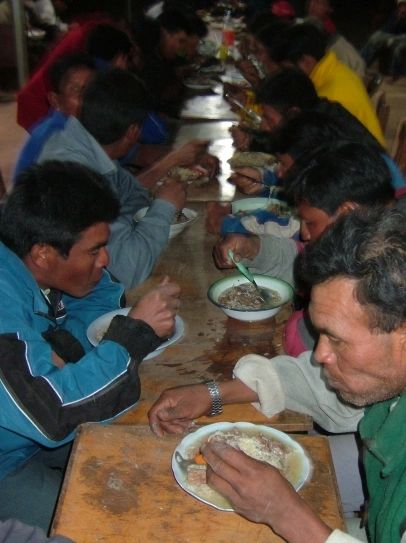
Nearest the camera is Cecilio Flores, Mistolar’s token non-member, a local celebrity who occasionally threatens to relinquish the position.
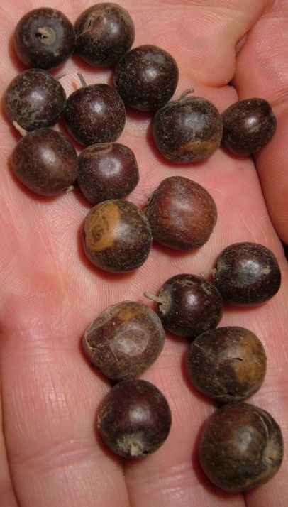
The edible mistol fruit from which Mistolar gets its name.
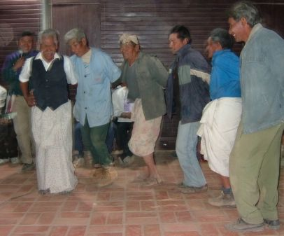
A traditional Nivaclé dance.
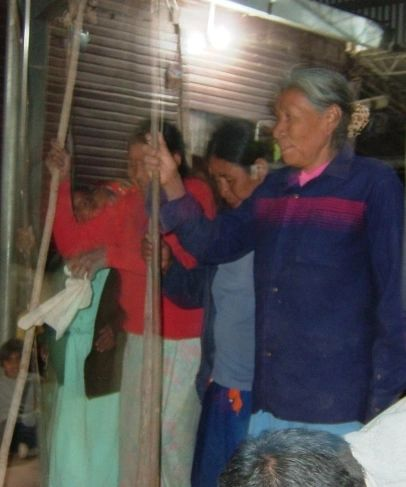
A traditional Nivacché dance.
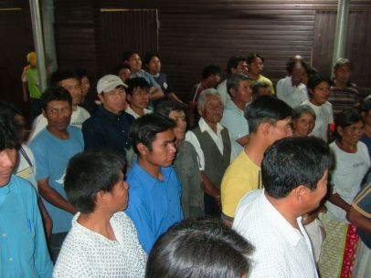
Commemorating the history of their community, those baptized at the beginning in 1980 stand in one group, then are joined by those baptized in 1981, then by groups from each succeeding period, until nearly all are standing together.
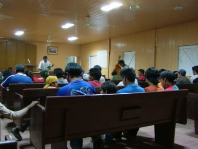
The generator had been out of commission for some time, so the choir takes advantage of the light by putting in some extra practice in the chapel.
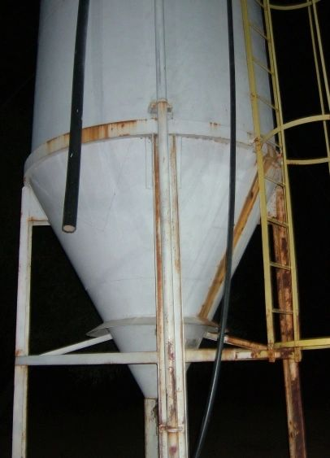
The well water in this tank is too salty for the people to drink without getting sick, but it keeps the animals alive. Since most of the Pilcomayo river now flows far away in Argentina, it no longer provides water to Mistolar, and crocodiles have replaced the fish in what remains of the Pilcomayo river in Paraguay.
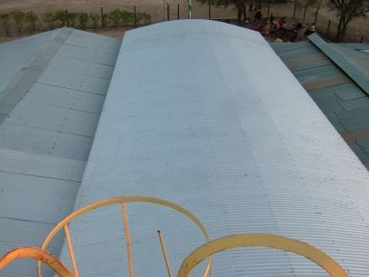
Looking down on the chapel from the top of the water tank. The people depend on rain collected from this roof and stored in underground tanks. During our visit the tanks were nearly empty because of this year’s extraordinary drought. Many families (72 individuals) have moved to Potrillo in Argentina where work is available, and are seeking residency there.
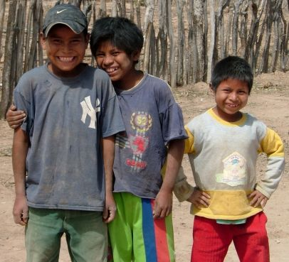
Kids in Campo Ampu, between Mistolar and the Mennonite colonies.
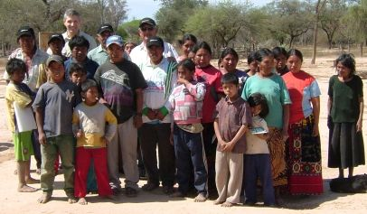
Campo Ampu is small, but many members live there. They have good water and clear title to their land, but very little food.
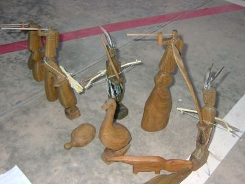
Sculptures carved from Palo Santo wood in La Abundancia.
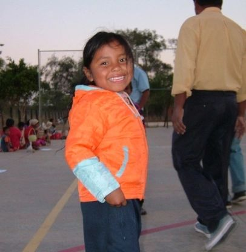
Bundled up for a gathering on a chilly night.
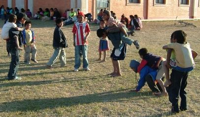
Kids playing in La Abundancia.
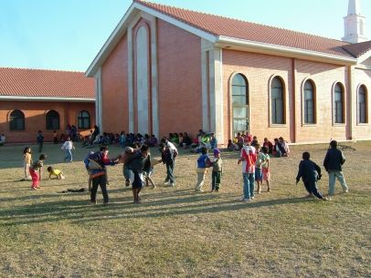
The chapel is the center of all community activities.
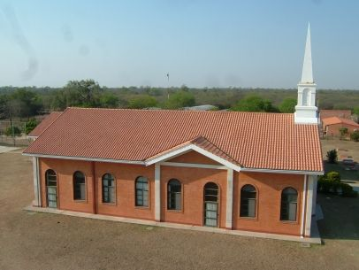
The La Abundancia Chapel. To the right are the teachers’ quarters and the health center.

The old chapel is now the school. La Abundancia has twice the population of Mistolar, and the children benefit from three additional grades (7th – 9th).

The La Abundancia health center, currently unstaffed.
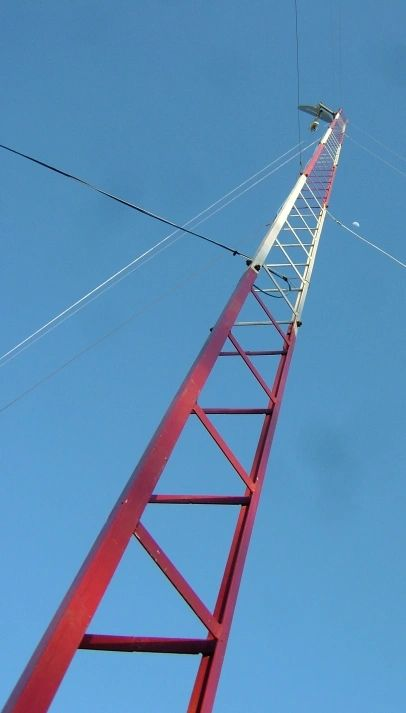
The new internet tower is intended to improve communication with La Abundancia.
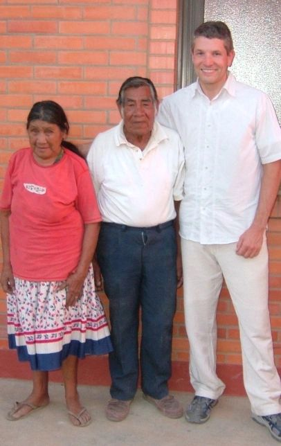
Isprond Toledo: the first branch president in Mistolar, pioneer in La Abundancia, and patriarch of the Toledo clan. His wife Soficha is now blind. They were sealed in Asuncion in 2003.